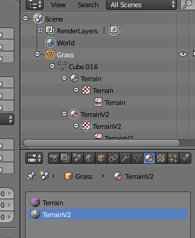
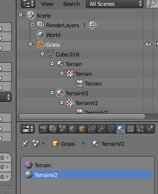

redmouth
There are 2 materials in the blender model, but with the following command executed,
AssetImporter model input.blend out.mdl
only 1 material named TerrainV2 is saved, the other is missing.


There are 2 materials in the blender model, but with the following command executed,
AssetImporter model input.blend out.mdl
only 1 material named TerrainV2 is saved, the other is missing.


Have you tried using the Blender to Urho3D mesh exporter? Someone recommended the plugin to me quite a while before and it turned out to be working pretty well.
I never had any success with AssetImporter on .blends.
Use Blender exporter plugin. The only other path is using .fbx.

Yes, it will be much easier if you would just either use reattiva’s Blender exporter or export it first to Blender FBX and then with AssetImporter.
Thanks for all of your advice.